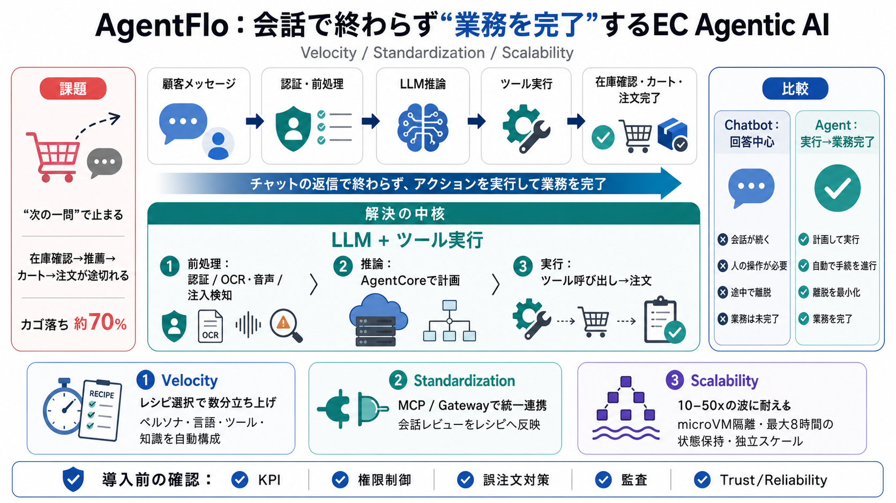

Building multi-tenant agents with Amazon Bedrock AgentCore | Artificial Intelligence
cross-session data leakage. The architecture is a good fit for hosting multi-tenant MCP servers, agents, and AG-UI serve…

AWSを使い、AIエージェントを“会話で終わらせず業務を実行”するための設計思想を、Velocity・Standardization・Scalability中心に圧縮して整理します。
カゴ落ち（未購入）や問い合わせ過多は、応答生成ではなく「在庫確認→推薦→カート→注文」までの業務実行が途切れることで起きます。
AIエージェントは推論だけでなく、ツール（在庫確認・カート作成・注文処理等）を呼び出して業務を完了へ導きます。
店舗ごとの個別開発を減らすため、ペルソナ・言語・ツールセット・プロンプト・知識・ビジネスルールを“レシピ”として選ぶだけにします。
ツール連携を統一的なインターフェースに寄せることで、追加・差し替えを扱いやすくし、標準化を“学習で改善”できる形にします。
フラッシュセール等で会話数が10〜50倍になっても、メッセージング層・エージェント実行・ツール実行を独立にスケールします。
メッセージ到達から認証・前処理を行い、AgentCore runtimeで推論とツール呼び出しをオーケストレーションし、業務完了まで導きます。
チャットボットは応答中心、エージェントはLLMの判断に加えて在庫確認・カート作成・注文実行などをツールとして行います。
Velocityは導入を速くし、Standardizationは増える連携を整え、Scalabilityは需要の揺らぎで失速しない前提を作ります。
アーキテクチャの考え方は実務に近い一方、KPIや失敗時運用など定量・評価の前提はこの抜粋では不足します。
Part 1は設計の背骨ですが、意思決定には“何を測り、どう失敗させず、どう監査するか”を追加で埋める必要があります。
レシピで立ち上げを速くし（Velocity）、統一連携で増やし（Standardization）、隔離と状態保持で波に耐える（Scalability）。安全性の詳細はPart 2で確認します。
cross-session data leakage. The architecture is a good fit for hosting multi-tenant MCP servers, agents, and AG-UI serve…
AgentCore Gateway: AgentCore Gateway transforms static Lambda functions into dynamic, context-aware agent tools using th…
As an AWS originated project, the Strands Agents SDK integrates naturally with the AWS ecosystem. It can work with Amazo…
Amazon Bedrock AgentCore Runtime is a secure, serverless runtime purpose-built for deploying and scaling dynamic AI agen…
Amazon Bedrock AgentCore (currently in preview) is a comprehensive set of services designed to deploy and operate AI age…